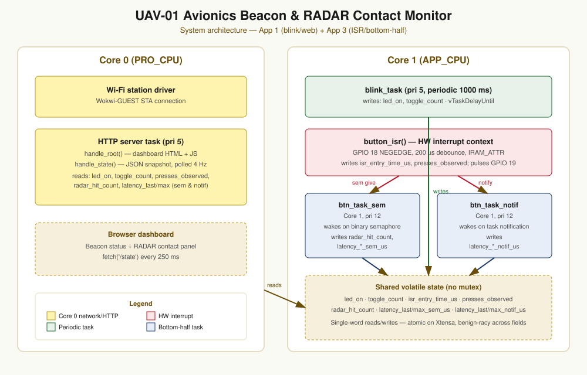

Project overview
This capstone integrates two earlier scaffolds into one running system. Core 1 runs a periodic status beacon (blink_task) reporting the UAV's online/offline state, plus two bottom-half tasks woken by a hardware interrupt that simulates an incoming RADAR contact on a physical button. Core 0 runs Wi-Fi and an HTTP server that exposes both the beacon state and live ISR-to-bottom-half latency as JSON, polled by the browser dashboard shown above.
The two bottom-half tasks exist deliberately as a pair: one wakes via a binary semaphore, the other via a direct task notification, so the dashboard reports comparative wake latency for both signaling primitives on every press — the evidence behind the task-table and engineering-analysis sections below.
Live demo
System architecture

Core 0 owns Wi-Fi and HTTP — nothing time-critical lives there. Core 1 holds three tasks that matter for real-time behavior: the beacon at priority 5, and both bottom-half tasks at priority 12, so a RADAR contact always preempts the beacon, never the reverse.
Task table + WCET evidence
| Task / ISR | Core | Priority | Type / period | Shared state touched | Latency / WCET |
|---|---|---|---|---|---|
| blink_task | 1 | 5 | Periodic, 1000 ms | writes led_on, toggle_count | N/A — report jitter if measured |
| button_isr | 1 | HW ISR | Aperiodic, GPIO18 NEGEDGE, 200 µs debounce | writes isr_entry_time_us, presses_observed | 21 µs |
| btn_task_sem | 1 | 12 | Aperiodic, wakes on binary semaphore | writes radar_hit_count, latency_*_sem_us | 2280 µ |
| btn_task_notif | 1 | 12 | Aperiodic, wakes on task notification | writes latency_*_notif_us | 31 µs |
| HTTP server task | 0 | 5 | Event-driven, per request | showreads all shared state | Not on the RT path — isolated on Core 0 |
Hazard analysis
| Hazard | Cause | Effect | Mitigation | Severity |
|---|---|---|---|---|
| Beacon looks “online” after a hang | blink_task starved or crashed; last led_on value persists | Dashboard shows false confidence | Staleness timestamp not yet implemented — future work | High |
| RADAR contact missed | Binary semaphore already given before it's taken | Contact under-counted, no error surfaced | Known binary-sem limit; queue/counting sem would close it | Medium |
| Torn read of latency stats | last/max latency fields written as separate ops | One poll could show inconsistent last vs. max | Benign for a dashboard; self-corrects next poll | Low |
| Wi-Fi drop mid-session | Simulated AP / network instability | Dashboard goes dark; onboard tasks unaffected | Core separation isolates RT path from network stack | Medium |
| ISR starvation of lower-priority tasks | Rapid sustained button presses | HTTP/blink tasks delayed if not gated | 200 µs debounce bounds worst-case interrupt rate | Low |
Selected engineering analysis
So a RADAR contact always preempts the beacon toggle — a button press can delay when the LED flips, but the LED can never delay how fast a contact is serviced.
No — there's no shared mutex between the beacon and the bottom-half tasks, so classic inversion doesn't apply; the only shared resource is Core 1's CPU time, arbitrated by scheduler priority, not a lock.
Read the full engineering analysis, hazard mapping, and AI disclosure in the README →